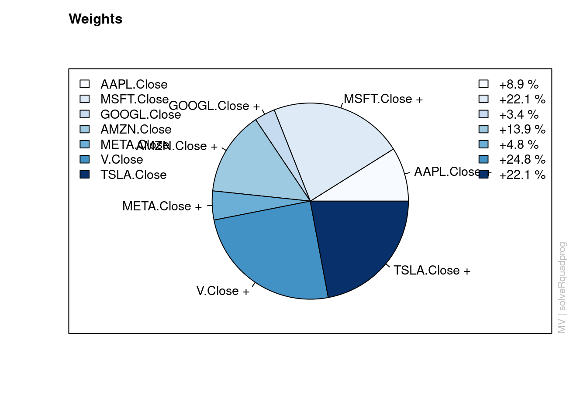
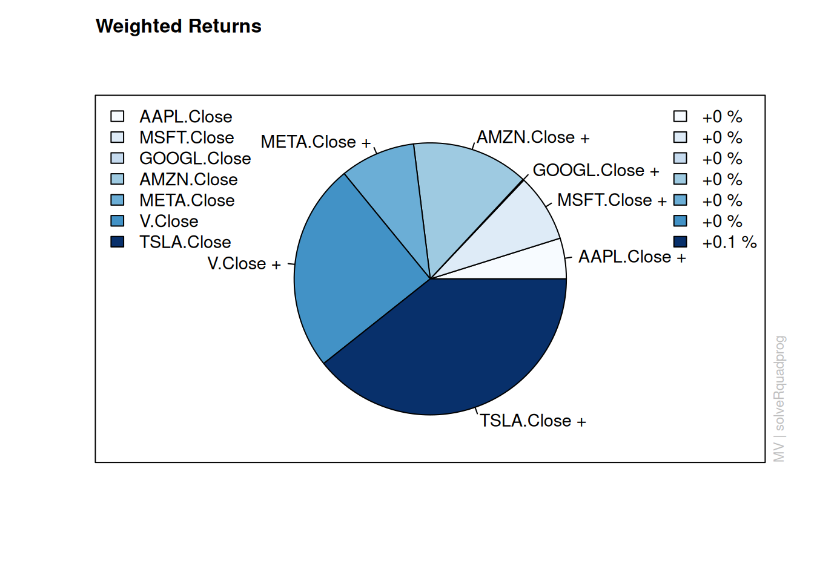
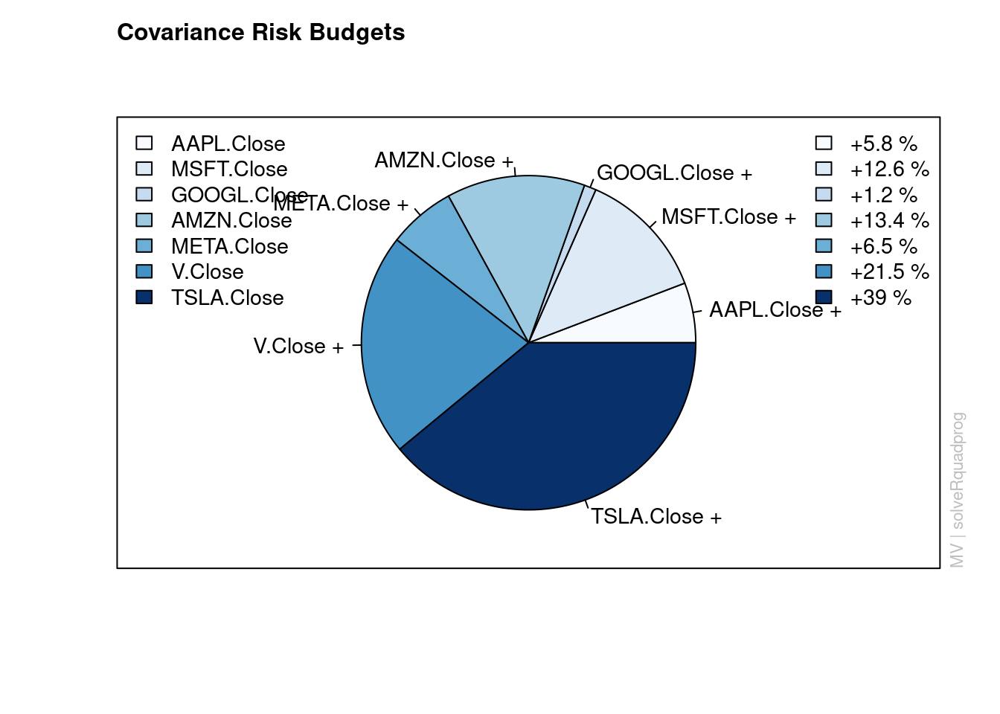

I want your feedback to make the book better for you and other readers. If you find typos, errors, or places where the text may be improved, please let me know. The best ways to provide feedback are by GitHub or hypothes.is annotations.
Opening an issue or submitting a pull request on GitHub: https://github.com/isaactpetersen/Fantasy-Football-Analytics-Textbook
Adding an annotation using hypothes.is.
To add an annotation, select some text and then click the
symbol on the pop-up menu.
To see the annotations of others, click the
symbol in the upper right-hand corner of the page.
19 Modern Portfolio Theory
19.1 Getting Started
19.1.1 Load Packages
19.2 Overview
19.3 Fantasy Football is Like Stock Picking
Selecting players for your fantasy team is like picking stocks. In both fantasy football and the stock market, your goal is to pick assets (i.e., players/stocks) that will perform best and that others undervalue. But what is the best way to do that? Below, we discuss approaches to picking players/stocks.
19.3.1 The Wisdom of the Crowd (or Market)
In picking players, there are various approaches one could take. You could do lots of research to pick players/stocks with strong fundamentals that you think will do particularly well next year. By picking these players/stocks, you are predicting that they will outperform their expectations. However, all of your information is likely already reflected in the current valuation of the player/stock, so your prediction is basically a gamble. This is evidenced by the fact that people do not reliably beat the crowd/market.
Even so-called experts do not beat the market reliably. There is little consistency in the performance of mutual fund managers over time. In the book, “The Drunkard’s Walk: How Randomness Rules Our Lives”, Mlodinow (2008) reported essentially no correlation between performance of the top mutual funds in a five-year period with their performance over the subsequent five years. That is, the best funds in a one period were not necessarily the best funds in another period. This suggests that mutual fund managers differ in great part because of luck or chance rather than reliable skill. In any given year, some mutual funds will do better than other mutual funds. But this overperformance in a given year likely reflects more randomness than skill. That is likely why a cat beat professional investors in a stock market challenge (archived at https://perma.cc/R3XU-K6J8). Although our sample size is much smaller with fantasy football projections, there also appears to be little consistency in fantasy football sites’ rank in accuracy over time [INSERT], suggesting that the projection sources are not reliably better than each other (or the crowd) over time.
The market reflects all of the knowledge of the crowd. One common misconception is that if you go with the market, you will receive “average” returns (by “average”, I mean that you will be in the 50th percentile among investors). This is not true—it has been shown that most mutual funds (about 80%) underperform the average returns of the stock market. So, by going with the market average, you will likely perform better than the “average” fund/investor. Consistent with this, crowd-averaged fantasy football projections tend to be more accurate than any individual’s projection: INSERT This evidence is consistent with the notion of the wisdom of the crowd, described in Section 22.3. Moreover, even if the stock market is relatively accurate (“efficient”) in terms of valuing stocks based on all (publicly) available information (i.e., the efficient market hypothesis), your fantasy football league is likely not. Thus, it may be effective to use crowd-based projections to identify players who are undervalued by your league.
19.3.2 Diversification
Modern portfolio theory (mean-variance theory) is a framework for determining the optimal composition of an investment portfolio to maximize expected returns for a given level of risk. Here, risk refers to the variability (e.g., standard deviation or variance) of returns across time. Given two portfolios with the same expected returns over time, people will prefer the “safer” portfolio—that is, the portfolio with less variability/volatility across time. One of the powerful notions of modern portfolio theory is that, through diversification, one can achieve lower risk with the same expected returns. In investing, diversification involves owning multiple asset classes (e.g., domestic and international stocks and bonds), with the goal of having asset classes that are either uncorrelated or negatively correlated. That is, owning different types of assets is safer than owning only one type. If you have too much money in one asset and that asset tanks, you will lose your money. In other words, you do not want to put all of your eggs in one basket. By owning different asset classes, you can limit your downside risk without sacrificing much in terms of expected return.
This lesson can also apply to fantasy football. When assembling a team, you are essentially putting together a portfolio of assets (i.e., team of players). As with stocks, each player has an expected return (i.e., projection) and a degree of risk. In fantasy football, a player’s risk might be quantified in terms of the variability of projected scores for a player across projection sources (e.g., Projection Source A, Source B, Souce C, etc.), or as historical game-to-game variability. Variability of projected scores for a player across projection sources could reflect the uncertainty of projections for a player. Variability of historical (actual) fantasy points across games could reflect many factors, including risks due to injuries, situational changes (e.g., being traded to a new team or changes in team composition such as due to the acquisition of new players on the team), game scripts, and the tendency for the player to be “boom-or-bust” (e.g., if they are highly dependent on scoring touchdowns or long receptions for fantasy points). All things equal, we want to minimize our risk for a given level of expected returns. That way, we have the best chance of winning any given week. For the same level of expected returns, higher risk teams might have a few amazing games, but their teams might fall flat in other weeks. That is, for a given (high) rate of return, you are best off in the long run (i.e., over the course of a season) with a lower risk team compared to a higher risk team (archived at https://perma.cc/NE35-G6LR).
In terms of diversification, it can be helpful to diversify in multiple ways. First, it can be helpful not to rely on just one or two “stud” players. If they are on bye or have a down week, your team is more likely to suffer. Also, there are risks in picking multiple offensive players from the same team. If you draft your starting Quarterback and Wide Receiver from the same team (e.g., the Cowboys), you are exposing your fantasy team to considerable risk. For instance, if you have the Quarterback and Wide Receiver from the same team, and the team has a poor offensive outing, that will have a greater impact. You can limit your downside risk by diversifying—drafting players from different teams. That way if the Cowboys’ offense does poorly in a given week, your fantasy team will not be as affected. Having multiple players on a juggernaut offense can be a boon, but it can be challenging to predict which offense will lead the league.
However, sometimes having two players on the same team might be beneficial because some positions may be uncorrelated or even negatively correlated, which can also reduce risk. For instance, the performance of the Tight End and Running Back on the same team tends to be slightly negatively correlated, so it might not be a bad idea to start the Tight End and Running Back from the same team. For a correlation matrix of all positions on the team, see: https://assets-global.website-files.com/5f1af76ed86d6771ad48324b/607a4434a565aa7763bd1312_AndyAsh-Sharpstack-RPpaper.pdf (archived at https://perma.cc/JQ6G-KSRT).
Another important idea from modern portfolio theory is that, if you want to achieve higher returns, you may be able to by accepting additional—and the right combination of—risk. In general, risk is positively correlated with return. That is, receiving higher returns generally requires taking on additional risk—at least as long as we stay along the efficient frontier, described next.
19.4 The Efficient Frontier of a Stock Portfolio
The ultimate goal in fantasy football is to draft players for your starting lineup that provide the most projected points (i.e., the highest returns) and the smallest downside risk. That is, your goal is to achieve the optimal portfolio at a given level of risk, depending on how much risk you are willing to tolerate. One of the key tools in modern portfolio theory for identifying the optimal portfolio (for a given risk level) is the efficient frontier. The efficient frontier is a visual depiction of the maximum expected returns for a given level of risk (where risk is the variability in returns over time). The efficient frontier is helpful for identifying the optimal portfolio—the optimal combination and weighting of assets—for a given risk level. Anything below the efficient frontier is considered inefficient (i.e., lower-than-maximum returns for a given level of risk).
In the example below, we use historical returns (since YEAR) as the expected future returns. However, using historical returns as the expected future returns is risky because, as described in the common disclaimer, “Past performance does not guarantee future results.” If you select a relatively short period of historical returns, you may be selecting a period when the stock performed particularly well. When evaluating historical returns it is preferable to evaluate long time horizons and to evaluate how the stock performed during period of both boom (i.e., “bull markets”) and bust (i.e., “bear markets”, such as in a recession).
19.4.1 Download Historical Stock Prices
19.4.2 Calculate Stock Returns
19.4.3 Create Portfolio
19.4.4 Determine the Efficient Frontier
Code
Title:
MV Portfolio Frontier
Estimator: covEstimator
Solver: solveRquadprog
Optimize: minRisk
Constraints: LongOnly
Portfolio Points: 5 of 1000
Portfolio Weights:
AAPL.Close MSFT.Close GOOGL.Close AMZN.Close META.Close V.Close DIS.Close
1 0.0000 0.0000 0.0000 0.0000 0.0000 0.0000 1.0000
250 0.1330 0.1302 0.1004 0.0537 0.0000 0.3058 0.1487
500 0.0848 0.1991 0.0000 0.1271 0.0774 0.2656 0.0000
750 0.0000 0.1124 0.0000 0.1532 0.1526 0.0000 0.0000
1000 0.0000 0.0000 0.0000 0.0000 0.0000 0.0000 0.0000
NKE.Close TSLA.Close
1 0.0000 0.0000
250 0.1108 0.0174
500 0.0000 0.2459
750 0.0000 0.5818
1000 0.0000 1.0000
Covariance Risk Budgets:
AAPL.Close MSFT.Close GOOGL.Close AMZN.Close META.Close V.Close DIS.Close
1 0.0000 0.0000 0.0000 0.0000 0.0000 0.0000 1.0000
250 0.1369 0.1351 0.1023 0.0571 0.0000 0.3084 0.1341
500 0.0617 0.1511 0.0000 0.1090 0.0700 0.1712 0.0000
750 0.0000 0.0403 0.0000 0.0703 0.0773 0.0000 0.0000
1000 0.0000 0.0000 0.0000 0.0000 0.0000 0.0000 0.0000
NKE.Close TSLA.Close
1 0.0000 0.0000
250 0.1037 0.0225
500 0.0000 0.4371
750 0.0000 0.8121
1000 0.0000 1.0000
Target Returns and Risks:
mean Cov CVaR VaR
1 0.0004 0.0165 0.0377 0.0239
250 0.0008 0.0128 0.0304 0.0198
500 0.0013 0.0163 0.0374 0.0255
750 0.0017 0.0245 0.0548 0.0367
1000 0.0022 0.0356 0.0775 0.0509
Description:
Thu Sep 5 14:24:37 2024 by user: Code
# Extract the coordinates of individual assets
asset_means <- colMeans(returns)
asset_sd <- apply(returns, 2, sd)
# Add some padding to plot limits (so ticker symbols don't get cut off)
xlim <- range(asset_sd) * c(0.9, 1.1)
ylim <- range(asset_means) * c(0.9, 1.1)
xlim[1] <- 0
ylim[1] <- 0
# Set scientific notation penalty
options(scipen = 999)
plot(
efficientFrontier,
which = c(
1, # efficient frontier
3, # tangency portfolio
4), # risk/return of individual assets
control = list(
xlim = xlim,
ylim = ylim
))
# Add text labels for individual assets
points(
asset_sd,
asset_means,
col = "red",
pch = 19)
text(
asset_sd,
asset_means,
labels = symbols,
pos = 4,
cex = 0.8,
col = "black")19.4.5 Identify the Optimal Weights
19.4.5.1 Tangency Portfolio
The tangency portfolio is the portfolio with the highest Sharpe ratio (i.e., the highest ratio of return to risk). In other words, it is the portfolio with the greatest risk-adjusted returns.
Code
# Find the tangency portfolio (portfolio with the highest Sharpe ratio)
tangencyPortfolio <- fPortfolio::tangencyPortfolio(
data = returns_ts,
spec = portfolioSpec)
# Extract optimal weights
tangencyPortfolio_optimalWeights <- fPortfolio::getWeights(tangencyPortfolio)
tangencyPortfolio_optimalWeights AAPL.Close MSFT.Close GOOGL.Close AMZN.Close META.Close V.Close
0.09817670 0.20020757 0.00000000 0.12313288 0.06977114 0.29277404
DIS.Close NKE.Close TSLA.Close
0.00000000 0.00000000 0.21593766
Title:
MV Tangency Portfolio
Estimator: covEstimator
Solver: solveRquadprog
Optimize: minRisk
Constraints: LongOnly
Portfolio Weights:
AAPL.Close MSFT.Close GOOGL.Close AMZN.Close META.Close V.Close
0.0982 0.2002 0.0000 0.1231 0.0698 0.2928
DIS.Close NKE.Close TSLA.Close
0.0000 0.0000 0.2159
Covariance Risk Budgets:
AAPL.Close MSFT.Close GOOGL.Close AMZN.Close META.Close V.Close
0.0761 0.1612 0.0000 0.1106 0.0658 0.2039
DIS.Close NKE.Close TSLA.Close
0.0000 0.0000 0.3825
Target Returns and Risks:
mean Cov CVaR VaR
0.0012 0.0157 0.0362 0.0246
Description:
Thu Sep 5 14:24:37 2024 by user: 


19.4.5.2 Portfolio with Max Return at a Given Risk Level
Code
# Define target risk levels
targetRisks <- seq(0, 0.3, by = 0.01)
# Initialize storage for optimal portfolios
optimalPortfolios <- list()
optimalWeights_list <- list()
# Find optimal weightings for each target risk level
for (risk in targetRisks) {
# Create a portfolio optimization specification with the target risk
portfolioSpec <- fPortfolio::portfolioSpec()
fPortfolio::setTargetRisk(portfolioSpec) <- risk
# Solve for the maximum return at this target risk
optimal_portfolio <- fPortfolio::maxreturnPortfolio(
returns_ts,
spec = portfolioSpec)
# Store the optimal portfolio
optimalPortfolios[[as.character(risk)]] <- optimal_portfolio
# Store the optimal portfolio weights with risk level
optimal_weights <- fPortfolio::getWeights(optimal_portfolio)
optimalWeights_list[[as.character(risk)]] <- c(RiskLevel = risk, optimal_weights)
}
optimalWeightsByRisk <- dplyr::bind_rows(optimalWeights_list)
optimalWeightsByRisk19.5 The Efficient Frontier of a Fantasy Team
In fantasy football, the efficient frontier can be helpful for identifying the optimal players to draft for a given risk level (and potentially within the salary cap). It can also be helpful for identifying potential trades. In this way, modern portfolio theory and the efficient frontier can be helpful for arbitrage—buying and selling the same asset (in this case, player) to take advantage of different prices for the same asset. That is, you could buy low and, for players who outperform expectations, sell high—in the form of a trade.
19.5.1 Based on Variability Across Projection Sources
19.5.2 Based on Historical Game-to-Game Variability
https://eng.wealthfront.com/2012/01/17/moneyball-using-modern-portfolio-theory-to-win-your-fantasy-sports-league/ (archived at https://perma.cc/JQ6G-KSRT)
19.6 Conclusion
In summary, fantasy football is similar to stock picking. You are most likely to pick the best players if you go with the wisdom of the crowd (e.g., average projections across projection sources) and diversify. Most projections are public information, so you might wonder whether using crowd projections gains you anything because everybody else has access to public information. However, this is also the case with stocks, and people still consistently perform best over time when they go with the market. Nevertheless, crowd projections are not highly accurate. And fantasy football is a game, so feel free to have fun and deviate from the crowd! However, you may be just as (if not more) likely to be wrong by deviating from the crowd.
19.7 Session Info
R version 4.4.1 (2024-06-14)
Platform: x86_64-pc-linux-gnu
Running under: Ubuntu 22.04.4 LTS
Matrix products: default
BLAS: /usr/lib/x86_64-linux-gnu/openblas-pthread/libblas.so.3
LAPACK: /usr/lib/x86_64-linux-gnu/openblas-pthread/libopenblasp-r0.3.20.so; LAPACK version 3.10.0
locale:
[1] LC_CTYPE=C.UTF-8 LC_NUMERIC=C LC_TIME=C.UTF-8
[4] LC_COLLATE=C.UTF-8 LC_MONETARY=C.UTF-8 LC_MESSAGES=C.UTF-8
[7] LC_PAPER=C.UTF-8 LC_NAME=C LC_ADDRESS=C
[10] LC_TELEPHONE=C LC_MEASUREMENT=C.UTF-8 LC_IDENTIFICATION=C
time zone: UTC
tzcode source: system (glibc)
attached base packages:
[1] stats graphics grDevices utils datasets methods base
other attached packages:
[1] lubridate_1.9.3 forcats_1.0.0 stringr_1.5.1
[4] dplyr_1.1.4 purrr_1.0.2 readr_2.1.5
[7] tidyr_1.3.1 tibble_3.2.1 ggplot2_3.5.1
[10] tidyverse_2.0.0 fPortfolio_4023.84 fAssets_4023.85
[13] fBasics_4041.97 timeSeries_4032.109 timeDate_4032.109
[16] quantmod_0.4.26 TTR_0.24.4 xts_0.14.0
[19] zoo_1.8-12
loaded via a namespace (and not attached):
[1] gtable_0.3.5 xfun_0.47 htmlwidgets_1.6.4
[4] lattice_0.22-6 tzdb_0.4.0 numDeriv_2016.8-1.1
[7] generics_0.1.3 quadprog_1.5-8 vctrs_0.6.5
[10] tools_4.4.1 bitops_1.0-8 stats4_4.4.1
[13] curl_5.2.2 parallel_4.4.1 fansi_1.0.6
[16] DEoptimR_1.1-3 pkgconfig_2.0.3 lifecycle_1.0.4
[19] truncnorm_1.0-9 compiler_4.4.1 fMultivar_4031.84
[22] munsell_0.5.1 mnormt_2.1.1 htmltools_0.5.8.1
[25] RCurl_1.98-1.16 Rsolnp_1.16 yaml_2.3.10
[28] pillar_1.9.0 MASS_7.3-60.2 boot_1.3-30
[31] robustbase_0.99-4 rneos_0.4-0 tidyselect_1.2.1
[34] digest_0.6.37 stringi_1.8.4 mvtnorm_1.3-1
[37] slam_0.1-53 kernlab_0.9-33 mvnormtest_0.1-9-3
[40] gsl_2.1-8 fastmap_1.2.0 grid_4.4.1
[43] colorspace_2.1-1 cli_3.6.3 magrittr_2.0.3
[46] utf8_1.2.4 XML_3.99-0.17 withr_3.0.1
[49] sn_2.1.1 scales_1.3.0 timechange_0.3.0
[52] energy_1.7-12 rmarkdown_2.28 igraph_2.0.3
[55] hms_1.1.3 ecodist_2.1.3 evaluate_0.24.0
[58] knitr_1.48 Rglpk_0.6-5.1 rlang_1.1.4
[61] spatial_7.3-17 Rcpp_1.0.13 glue_1.7.0
[64] jsonlite_1.8.8 fCopulae_4022.85 R6_2.5.1